This notes is written as my personal lecture notes taken down from the awesome lecture “Bitcoin and Cryptocurrency Technologies” provided by Princeton University on Coursera. Hope you guys find it helpful in your learning!
Grab the PDF version if you want better readability or archive!
Lecture 1 Basic Cryptography related
Part 1 Hash function
Hash function:
- Takes any string as input
- fixed-size output (
256bitsis what we use) - efficiently computable
Security Properties of Hash function
collision-free
- Idea: Nobody can find a pair $x,y$ s.t. $x \neq y$ yet $Hash(x) = Hash(y)$
- Collisions do exist
- Easy to illustrate, take our
256 bitshash function as example: there are only $2^{256}$ outputs and undefined arbitrarily large amount of input strings. There has to be collisions.
- Easy to illustrate, take our
- So the key is to avoid regular people to find these collisions
- Ways to find collisions
- Try $2^{130}$ randomly chosen inputs, there are $99.8\%$ chance that two of them collide. But this takes too long to matter.
- No hash functions up to now has been proven to be collision-free, it’s just too hard to find a collision so we believe it as collision-free
- Application of collision-free: Hash as message digest
- If we know $H(x) = H(y)$, we can say $x=y$ as we believe $H$ is collision-free
- So we can use it as a tool to compare large objects like files. Instead of comparing the whole file, we can just compare their hash which is significantly smaller. (In fact,
md5is used to verify file integrity)
hiding
Given $H(x)$, it is infeasible to find $x$.
No value of $x$ that is particularly likely. Set of value $x$ has to be very sparse.
Concatenate $x$ with another value $r$ which is from a very sparse set (or $r$ is chosen from a probability distribution that has
high min-entrophy) to sovle this problem.High min-entropymeans that the distribution is veryspread out, so that no particular value is chosen with more than negligible probability.Then given $H(r \mid x)$, it is infeasible to find $x$.
Application: Commitment
12345678910111213141516(com, key) := commit(msg)match := verify(com, key, msg)To seal msg in envelope:(com, key) := commit(msg) #then publish comTo open envelope:publish key, msganyone can use verify to check its validity#Implementation:commit(msg) := (H(key|msg), key) where key is a random 256-bit valueverify(com, key, msg) := (H(key|msg) == com)#To have such security properties:Hiding: given (H(key|msg), infeasible to find msgBinding: Infeasible to find msg != msg' s.t. that (H(key|msg) == H(key|msg')
puzzle-friendly
For every possible output value $y$, if $k$ is chosen from a distribution with high min-entropy, then it is infeasible to find $x$ s.t. $H(k\mid x) = y$
Application: Search puzzle
1Given a 'puzzle ID' id(from high min-entropy distrib) and a targe set Y, try to find a 'solution' x s.t. H(id | x) in Y.
Example: SHA-256 hash function
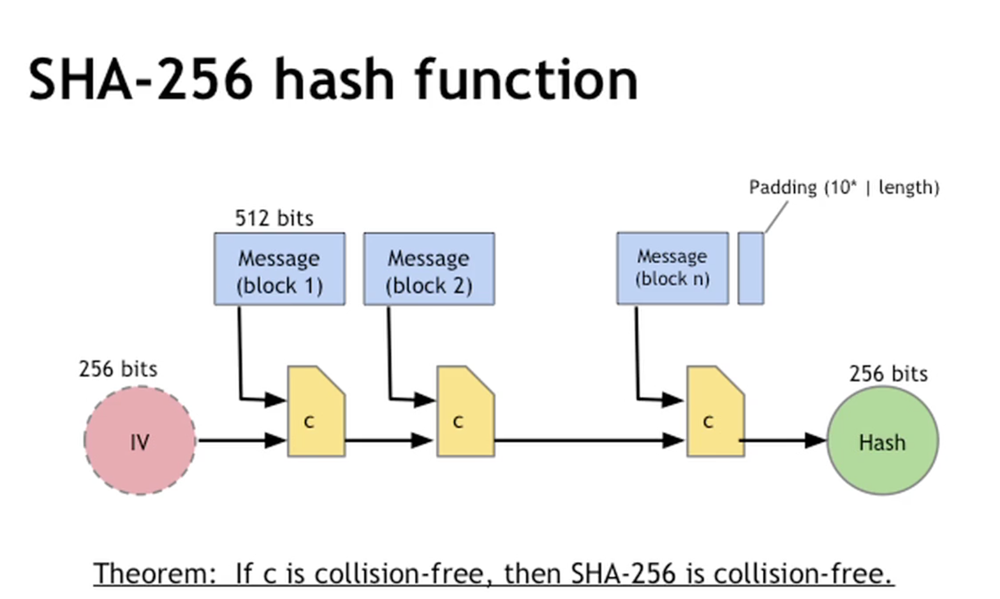
Algo walkthrough:
- Take the original message and divide it up in chunks of
512bitssize. The last block is padded with how many bits are there in the block and 0s to fill it up to512bits. - After the message is partitioned, we take the
IVkey which is a256bitsstring and concatenate with the first chunk of messageblock_1to be a768bitsmessage chunk. - Run this message chunk thru the compression algorithm
cto produce a new256bitskey and pass into the next execution with messageblock_2 - Repeat until no blocks left; return hash.
Th. If c is collision-free, then SHA-256 is collsiion free.
Part 2 Hash pointers
Hash pointer
- Pointer to where some info is stored
- and cryptographic hash of the info
- just like normal pointers, but not only where it is stored but also the hash of its data
With hash pointer, we can
- ask to get the info back
- certify that it hasn’t changed
Key idea: Build data structure with hash pointers
Example: Linkedlist with Hash pointers (blockchain)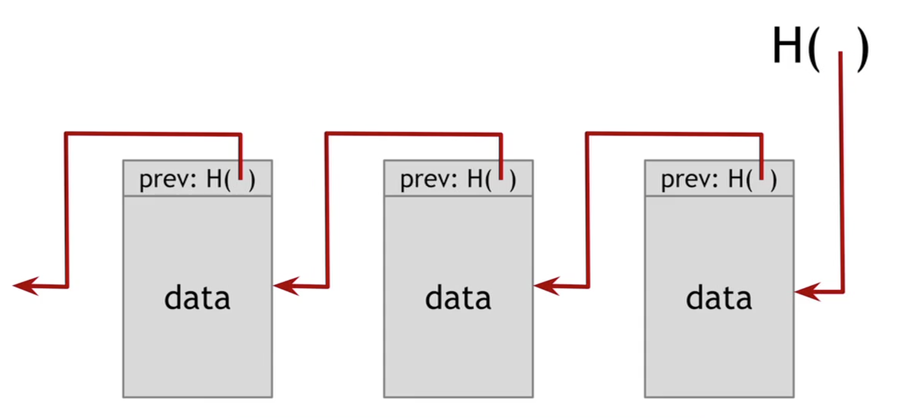
- we can build temper-evident log (If someone mess with data earlier we can detect it)
Example: binary tree with hash pointers (Merkle tree)

- Advantages:
- Holds many items but only need to remember the root hash
- Can verify membership in $O(\log n)$ time
- Variant: sorted Merkle tree (binary search tree with hash pointers)
- can verify non-membership in $O(\log n)$ time (Prove nothing in between)
Generally
- Can use hash pointers in any pointer-based data structure that has not cycles
Part 3 Digital Signatures
Features of Signatures
- Only you can sign, but anyone can verify
- Signature is tied to particular document; can’t be copy-and-pasted to another document
API for digital signatures
|
|
Requirements for signatures
Valid signatures verify
verify(pk, message, sign(sk,message)) == trueCan’t forge signatures
- Adversary who
- knows pk
- gets to see signatures on messages of his choice
- can’t produce a verifiable signature on another message
- Adversary who
Practical stuff
- Algorithms are randomized
- good source of randomness required
- Limit on message isze
- fix: use Hash(message) rather than message
- Fun trick: sign a hash pointer
- signatures covers the whole structure (sign the entire content)
- Bitcoins uses
ECDSA(Elliptic Curve Digital Signature Algorithm)standard- relies on extremely complicated maths
- good randomness is extremely essential for ECDSA
Part 4 Public Keys as Identities
Useful trick: pulic key == an identity
if you see
sigs.t.verify(pk, msg, sig) == true,In order to speak as
pk, you need to have the matching private keysk.
How to make a new identity
- create a new random key-pair
(sk, pk) pkis the pubic “name” you can use, normallyH(pk)aspkis largesklet’s you speak aspk- you control the identity because only you know
sk - if
pklooks random, nobody needs to know who you are
Decentralized identity management
- No need to use username, etc
- anyone can make a new identity anytime and make as many as wanted
- no central point of coordination
- these identities are called
addressorwallet_addressinBitcoin
Privacy (how private it is)
- Addresses not directly connected to real-word identity
- But observer can link together an address’s activity over time, make inferences
- Will talk this later
Part 5 A simple Cryptocurrency
Goofy Coin: Simplest Cryptocurrency
Rules:
Goofy can create new coins that belongs to him
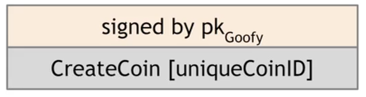
CreateCoin[uuid]singed bypk_goofA coin’s owner can spend it
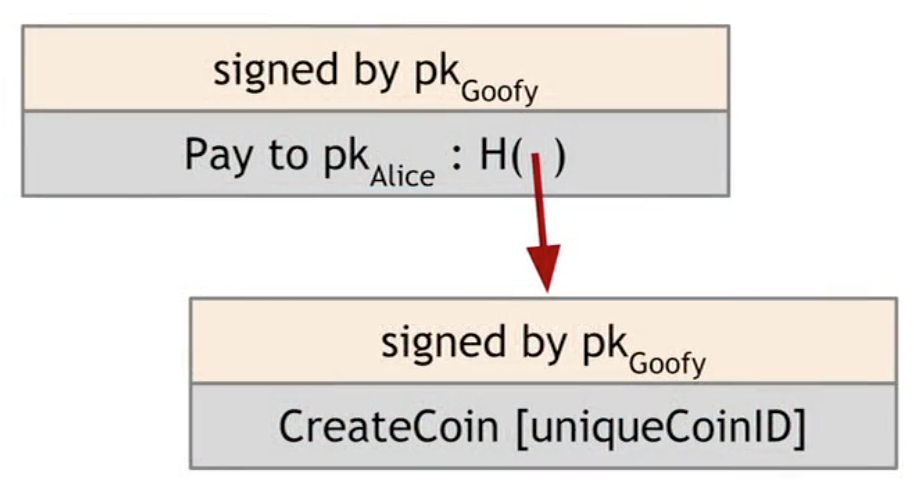
- make a statement
pay to pk_alicewith hash pointer signed bypk_goofy
- make a statement
The recipient can pass on the coin again
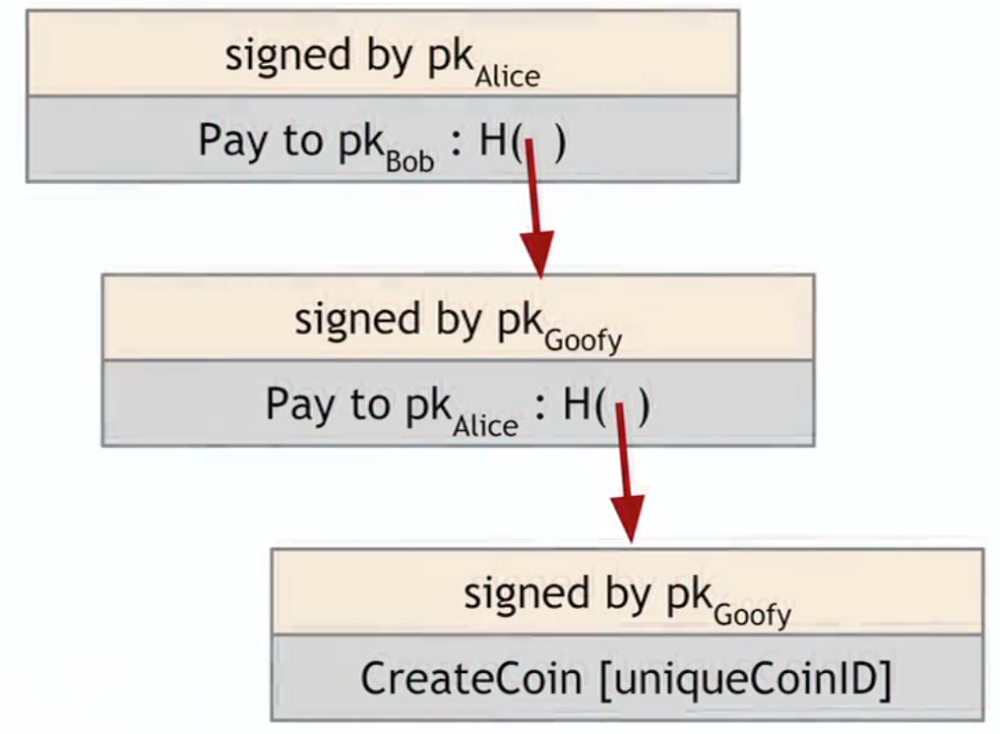
Problems
double-spending attack (one of the major design challenges)

- both
BobandChuckhas a valid claim on the coin
Scrooge Coin
Changes
on top of goofy coin
Scrooge publishes a history of all transactions(a blockchain signed by Scrooge)
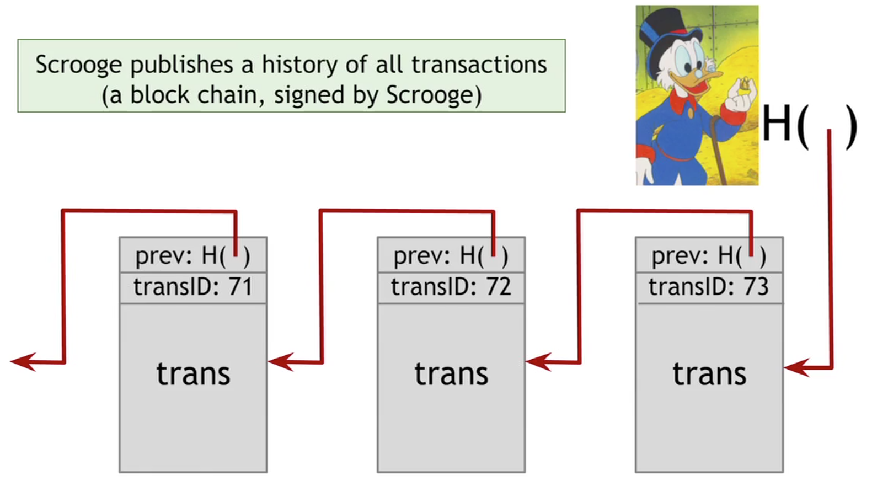
Optimization: put multiple transactions in the same block
Now everyone can detect double-spending
New
CreateCoinstransaction
New
PayCointransaction:
- consumes some coins and creates new coins of the same total value
- Valid if
- consumed coins valid
- not already consumed
- total value out = total value in
- signed by owners of all consumed coins
New Immutable
Coin- Coins can’t be transferred, subdivided, or combined
- But you can achieve the same effect by using transactions to subdivide
- Create new trans that consume your coin and pay out two new coins to yourself with a same total value
Problem: Centralization
Scrooge can be misbehaving
Scrooge have to operate his functions all the time
how to operate without any central, trusted party
Problems to solve:
If we can solve all of these problems, then we can build a currency that is very much like BitCoin. Which is like ScroogeCoin but without a centralized party.
- How everyone can agree upon a single published block chain that is the agreed upon history which transactions have happened?
- How people can agree which transactions are valid and which transactions have actually occurred?
- How we can assign IDs to things in a decentralized way?
Assignment: Scrooge Coin’s public ledger
Lecture 2 How Bitcoin achieves Decentralization
Part 1 Centralization vs. Decentralization
Decentralization is not “all-or-nothing”
- Email: Decentralized protocol (
smtp), but dominated by centralized webmail services(gmail,outlook).
Questions to answer about decentralization in Bitcoin
- Who maintains the ledger?
- Who has authority over which transactions are valid?
- Who creates new bitcoins?
- Who determines how the rules of the system change?
- How do bitcoins acquire exchange value?
- Beyond the protocol:
- Exchanges
- Wallet software
- Service providers
Aspects of decentralization in Bitcoin
P2P (Peer-to-Peer) Network
Open to anyone, low barrier to entry
Mining
Open to anyone, but inevitable concentration of power often seen as undesirable.
Mainly due to the computing resource required to solve hard computational problem
Updates to software
Core developers trusted by community, they have a lot of power
Part 2 Distributed Consensus
Bitcoin’s key challenge: Distributed Consensus
Why consensus protocols?
Traditional motivation: reliability in distributed systems.
e.g. Possible database inconsistency issue
Distributed K-V store: enables various applications like
DNS, public key directory, stock trades
Defining Distributed Consensus
- The protocol terminates
- All correct nodes decide on same value
- This value must have been proposed by some correct nodes
Bitcoin is a peer-to-peer system
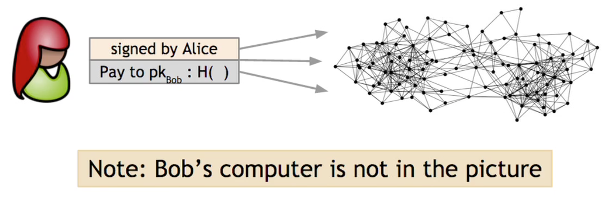
- When
Alicewants to pay Bob:
She broadcasts the transaction to all Bitcoin nodes- Alice’s Signature
- Bob’s
pubkey - Hash: hash pointer to the “history” of this coin
- Bob’s computer is not in the picture
- bitcoin is his no matter if he knows
- Order of transaction sequence
- Which nodes receive the broadcast
How consensus “could“ work in Bitcoin
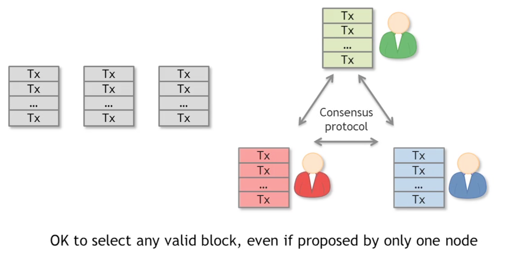
At any given time:
- All nodes have a sequence of blocks of transactions they’ve reached consensus on.
- Each node has a set of outstanding transactions it’s heard about
Why consensus is hard (technically)
Nodes may crash
Nodes may be malicious
Network is imperfect
- Not all pairs of nodes connected
- Faults in network
- Latency
- No notion of global time
- Not all nodes can agree to order of events by looking at timestamps, can’t determine which transaction happens first
Many impossibility results
Byzantine generals problem
Fischer-Lunch-Paterson (deterministic nodes)
Consensus impossible with a single faulty node
Well-known protocols to solve this problems
- Paxos
- Never produces inconsistent result
- Can (rarely) get stuck, fail to make any progress
- Paxos
Understanding impossibility results
- These tests are developed around the concept of distributed databases, not necessarily bitcoin
- Bitcoin consensus works better in practice than in theory
- Theory is still catching up
- But theory is important as it can help predict unforeseen attacks
Some things Bitcoin does differently
Bitcoin does not quite solve Distributed Consensus Problem in a general sense, but solves it in the context of a currency system.
- Introduces incentives
- Possible only because it’s a currency
- Embraces randomness
- Does away with the notion of a specific end-point
- Consensus happens over long time scales — about 1 hour
- But even at the end of that time, you’re not a 100% sure that a transaction or a block that you’re interested in has made it into the consensus block chain. Instead, as time goes on, your probability goes up higher and higher. And the probability that you’re wrong in making an assumption about a transaction goes down exponentially.
- So that’s the kind of inherently probabilistic guarantee that Bitcoin gives you. And that’s why it’s able to completely get around these traditional impossibility results on distributed consensus protocols.
Part 3 Consensus without Identity: the Block Chain
Why identity?
- Pragmatic: some protocols need node IDs
- Security: assume less than 50% malicious
Why don’t Bitcoin nodes have identities?
- Identity is hard in a P2P system — Sybil attack
- Pseudonymity is a goal of Bitcoin
Weaker Assumption: select random node
- Analogy: lottery or raffle
- When tracking & verifying identities is hard, we give people tokens. tickets, etc
- Now we can pick a random ID & select that node
Key idea: implicit consensus
- In each round ,random node is picked
- This node proposed the next block in the chain
- Other nodes implicitly accept/reject this block
- by either extending it
- or ignoring it and extending the chain from earlier block
- Recall every block contains hash of the block it extends
Bitcoin consensus algorithm (simplified)
- New transactions are broadcast to all nodes
- Each node collects new transactions into a block
- In each round, a random node gets to broadcast its block
- Other nodes accept the block only if all transactions in it are valid(unspent, valid signatures)
- Nodes express their acceptance of the block by including its hash in the next block they create
Why this works by looking at what can a malicious node do?
Attackers can’t steal bitcoins belong to others.
As she can’t forge their signatures. As long as the crypto is solid, this is impossible.
Attacker can deny service to some user.
But this is minor as nodes are selected at random to propose its block. Some honest node will propose its correct block sometime afterwards.
Attackers can start double-spending attacks.
How to prevent double spending in blockchain?
A valid transaction
Suppose this is Alice is buying some merchant from merchant Bob and the payment is done with Bitcoin.
A valid transaction could look like this:
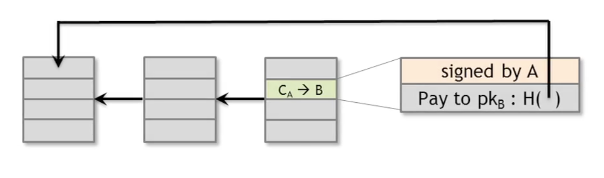
- Alice is paying Bob with a bitcoin $C_A$ signed by
Aliceand paid to the merchant Bob’spublic key(address) - There are actually at least two types of pointers in this graph
- The
Hash pointerfrom a block to its previous block indicating where it extends from - The
Hash pointerof thiscoin/transactionto its previous transaction(where the coin came from)- Recall Bitcoin is represented by a transaction
- Intuitively, a
coinhas a log of how it’s transferred around the network
- The
- There’s also a third pointer in this graph called
Merkle Tracewhich we are not discussing right now.
This is the blockchain right now. So as far as Bob is concerned, he saw the transaction is completed and added to the chain, he may allow Alice to receive her goods in exchange for her bitcoin payment. But this opens up vulnerability to double-spending attack.
A double-spending attack
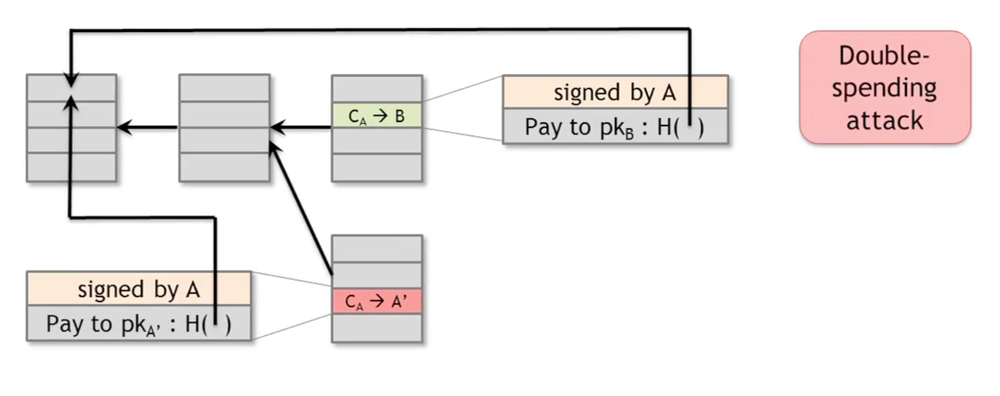
- If by random,
Aliceget to propose the next block;Alicecould propose a new block that looks like above.- Ignore altogether the valid block on that contains the transaction to
Bob. - And instead, contains a pointer to the previous block instead a pointer to the valid block.
- In addition, it contains a transaction that has a transfer of coins, from
Alicebut not toBob. Instead, it transfers toA'which is another address controlled byAlice.
- Ignore altogether the valid block on that contains the transaction to
- This is a classic double spending pattern.
- What is going on here, is Alice now creates a new transaction that transfers that coin, instead of to Bob’s address, to another address owned by her.
- This is a completely different transaction, also with the same
Hash Pointergoing back to the same transaction referred earlier in the transaction toBob.
How do we know if this double-spending attack is going to succeed or not?
Depends on which one of the green transaction and the red transaction is going to end up in the long-term consensus chain.
Consensus Rule for honest nodes: Honest node always follow the policy of extending the longest valid branch.
From a moral point of view, the green on is definitely the longest valid branch for other nodes to follow.
However, from a technical perspective, these two transactions are completely identical in validity. The nodes really have no way to tell which one is the “legitimate” transaction. (“legitimate” here is a moral judgement that we apply to it, so it’s not a technical distinction)
Nodes often follow a heuristic of extending the block that they first heard about on the peer-to-peer network, but it’s not a solid rule. And in any case, because of network latency, that could easily be the other way around.
So if
Aliceget to propose the block contains the red transaction, it could get included into the consensus chain and becomes the longest valid chain. Even if some other node gets to propose, she could potentially hack/bribe to achieve her goals.
So if
Alicesucceeded, her branch becomes the longest valid branch. Honest nodes will be more likely to add more blocks toAlice'sbranch and it will become more and more valid.At this point,
Alicehas succeeded her double spending attack. Her fraudulent transaction is successfully buried deep in the consensus chain.
How a Merchant like Bob can prevent this?

From Bob’s perspective he could confirm the transaction is successful on different circumstances.
He could confirm the transaction as long as it gets broadcasted. This is more foolhardy than our example above. This is called
0 confirmations.He could wait along and wait for 1 block with the successful legit transaction to be added to the consensus chain. This is called
1 confirmations.He could wait even longer, like
3 confirmations. Because the node to propose is selected at random. It’s incredibly hard forAliceto build a faulty chain with the same length as the legit chain. She would have to possess more and more malicious nodes to make her chain even 1 block longer.Based on the sense that
- most nodes are honest the fact
- longer the chain is after the green transaction, harder to produce fraudulent chain
The double-spend probability decreases exponentially with number of confirmations.
- The most common heuristic among the bitcoin community agrees upon 6 confirmations as being enough.
- There is nothing really special about the number six. It’s just a good trade-off between the amount of time you have to wait and your guarantee that the transaction you’re interested in ends up on the consensus block chain.
Recap
- Protection against invalid transactions is cryptographic, but enforced by consensus.
- Protection against double-spending is purely by consensus. Cryptography has nothing to say about this.
- You are never 100% sure that a transaction that you’re interested in is on the consensus branch. But this exponential probability guarantee is pretty good. After about six transactions, there’s virtually no chance that you’re gonna go wrong.
Part 4 Incentives and Proof of Work
Assumption of honesty is problematic
Nodes have financial incentives to subvert the protocols for their own gains
Can we give nodes incentives to behave honestly?
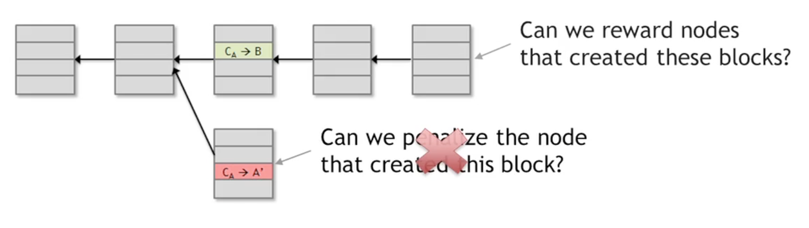
- Penalize nodes that create problematic blocks?
- Nodes don’t have identity, no way to chase them and penalize
- Can we reward nodes that create valid blocks?
- Yes.
- Penalize nodes that create problematic blocks?
Incentives in Bitcoin
Incentive 1: Block reward
Creator of block gets to
include special coin-creation transaction in the block
choose recipient address of this transaction
Value is fixed: currently 25 BTC, halves every 4 years (currently phase 2)
Bitcoin supply
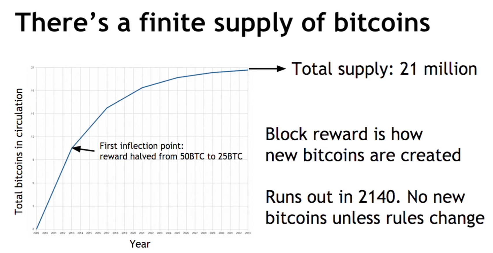
- The slope of the supply curve halts every 4 years
- This ends up as a geometric sequence with a final finite sum
- Bitcoin is only created this way(reward for building new blocks that ends up in the consensus chain)
Block creator gets to “collect” their rewards only if their block ends up on the long-term consensus branch. (The coin creation transaction is only valid if it ends up on the long-term consensus branch)
Incentive 2: Transaction value
- Creator of transaction can choose to make the output value less than input value
- Remainder is a transaction fee and goes to block creator
- Purely voluntary, like a tip
- How the environment will evolve is interesting game theory
Remaining problems
- How to pick a truly random node?
- How to avoid a free-for-all due to rewards? (Everyone runs a block try to get the block creation reward)
- How to prevent Sybil attacks?
One same solution to these remaining problems?
To approximate selecting a random node:
- select nodes in proportion to a resource that no one can monopolize(we hope)
Resource choices:
- Select a node in proportion to computing power:
proof-of-work - Select a node in proportion to ownership of the currency:
proof-of-stake
Proof-of-work (Intentions)
- Allow nodes to compete with each other with their computing power, result in nodes automatically getting picked in proportion to their computing power
- Make it moderately hard to create new identities(nodes)
Hash puzzles
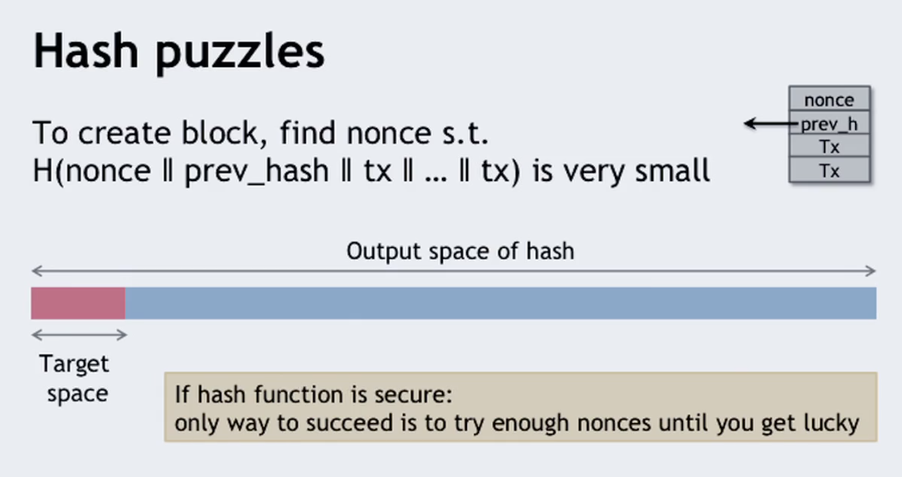
- To create block, it is required to find a
nonces.t. H(nonce|prev_hash|tx|tx|....|tx)is in a very small subset of the entire output space of the hash function- Therefore, if our hash function is secure enough: only way to succeed is to try enough nonces until you get lucky.
- Thus we made it moderately difficult to create new blocks.
- Completely does away with the requirement for somebody somehow to pick a random node.
- Instead, nodes are simply all the time independently competing to solve this puzzle. Once in a while, some node will get lucky and find a valid
nonceand that node gets to propose the next block.
PoW properties
Property 1: difficult to compute
- As of Aug 2014: about $10^{20}$ hashes per block, this is a humongous number
- So only some nodes bother to compete — miners
Property 2: parametrizable cost
- Nodes automatically recalculates the target space of PoW every two weeks based on the entire network’s global computing power s.t. a fixed rate output of blocks
- Goal: Average time between block creations = 10 minutes, a efficiency concern
Prob(alice wins next block) = fraction of global hash power she controls
Key security assumption: Attacks infeasible if majority of miners weighted by hash power follow the protocol (aka honest)

Property 3: trivial to verify
- nonce must be published as part of the block
- So other miners can verify that
H(nonce|prev_hash|tx|tx|....|tx) in target
Part 5 Putting It All Together
Mining Economics
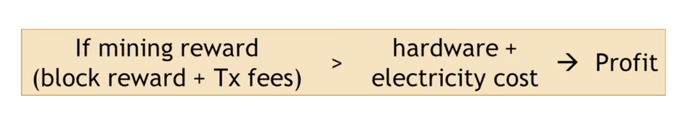Complications:
- Fixed vs. variable costs
- Reward depends on global hash rate
- Also exchange value of rewarded bitcoin in terms of dollars for example is fluctuating
- Whether profitable is a very complicated game theory problem
Recap
- Identities:
- Any time any user can make any number of pseudonymous key pair as identities.
- Transactions:
- Basically messages that are broadcast to the bitcoin p2p network.
- Which are instructions to transfer a coin from one address to another.
- Coin:
- Really is just a chain of transactions.
- P2P network:
- Goal: propagate all new transactions to all the Bitcoin peer nodes as well as new blocks to the Bitcoin peer nodes.
- The real security of the system doesn’t come from the perfection of the P2P network.
- Nevertheless, the underlying assumption is that the network is quite unreliable.
- Security comes from blockchain and consensus protocol.
- Block chain & consensus Protocol
- Your transaction to be in the block chain is that it achieves a lot of confirmations.
- It’s not a fixed number, 6 is a commonly used heuristic, but the more confirmations your transaction has received, the more blocks are found that extend the block that contained your transaction, the more certain you can be that your transaction was part of the consensus chain.
- A variety of orphan blocks, blocks that don’t make it to the consensus chain. Can be interpreted as different possibilities:
- An invalid transaction
- A double-spend attempt
- A network latency residue (t could simply represent the fact that there is latency in the network, and two miners competing to solve this proof of work puzzle. Simply ended up finding new blocks within just a few seconds of each other. And, so both of these blocks were broadcast nearly simultaneously onto the network. )
- Hash puzzles & mining
- So another subtle point here is that if Alice and Bob were two different miners, and Alice has 100 times as much computing power as Bob. What that means is, not that Alice will always win the race against Bob to find the next block, but instead, Alice and Bob have a ratio, a probability ratio, of finding the next block in the proportion 100 to 1. So in the long term Bob will find, on average, 1% of the blocks that Alice does.
- Miners are a special type of nodes that bother to compete in this game of creating new blocks and they’re rewarded for their efforts in terms of Bitcoins.
- And we expect that miners are going to be typically somewhere near the economic equilibrium of the expenditure that they incur, in terms of hardware and electricity, being somewhere equal to the rewards that they obtain in terms of the new block creation reward and the transaction fee based rewards.
Bitcoin has three types of consensus
- Value
- Like exchange rate in fiat currencies
- State (blockchain)
- Which transaction are valid
- Which transaction actually happened
- Ownership of bitcoin is based on consensus (other nodes think someone owns it)
- Rules (of the system)
- When the rule of system needs to change
- Soft forks
- Hard forks
Bitcoin is bootstrapped
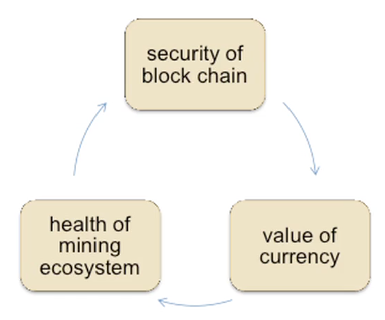
- Let’s start from the security of the block chain. So obviously we want the block chain to be secure for Bitcoin to be a viable currency. But, what is necessary for the block chain to be secure? What this means is that an adversary shouldn’t be able to overwhelm the consensus process. Shouldn’t be able to create a lot of nodes and take over 50% or more of the new block creation.
- But a prerequisite for that is a healthy mining ecosystem made up of largely honest protocol following nodes. So that’s a prerequisite for security of the block chain.
- But miners are only incentivized to mining if the exchange rate of Bitcoin is pretty high.
- But what ensures a high and stable value of the currency? That can only happen if, users in general, people who want to buy Bitcoins, have trust in the security of the block chain. Because if they believe that the network could be overwhelmed at any moment by an attacker then Bitcoin is not going to have a lot of value as a currency.
- So there is this interlocking interdependence between these three things.
What can a “51% attacker”(Consensus Suberter) do?
- Steal coins from existing address?
- Not possible.
- Even if the invalid branch makes it self the longest branch. Honest nodes will not approve and keep on mining valid blocks.
- Creating a fork in blockchain.
- A merchant running a honest node can simply ignore the longest branch as it contains a invalid transaction. (crypto and signature don’t checkout)
- Only if subverting both consensus and cryptography will succeed.
- Not possible.
- Suppress soem transactions?
- From the blockchain
- Possible
- Since he controls the consensus, he can skimpy refuse any new blocks contain that transaction
- also refuse build upon blocks that contain such transactions.
- Possible
- From the P2P network
- Impossible
- Assume the attacker doesn’t fully control the network, can’t prevent transaction being broadcasted to the network
- Impossible
- From the blockchain
- Change the block reward (Rule of the system)
- Impossible
- Doesn’t control the source software every node is using.
- Destroy the confidence of Bitcoin
- Possible
- Main practical attack
Remaining questions
- How do we get from consensus to currency?
- What else can we do with consensus?